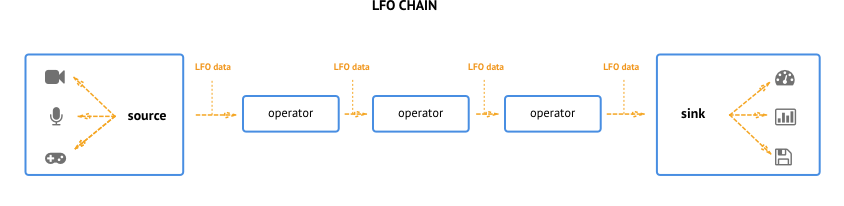

class: center, middle # Web Audio & Applications Ircam - 4 Juin 2015 - 12h15 Samuel Goldszmidt (APM/CRI) & Norbert Schnell (ISMM) ??? SG : Développeur Web NS : Chercheur, Designer son et interaction --- # Plan 1. Ircam → Web Audio 2. Web Audio technologies et standards 3. Ircam Web Audio librairies et framework 4. Prochaines étapes et perspectives à venir --- layout: true # Ircam → Web Audio --- --- ## Web Audio ? * HTML5 Media Element <audio> <video> - <small>CRI</small> * Web Audio pour la musicographie et la musicologie - <small> APM</small> * Objets connectés d'intéraction musicale - <small>ISMM</small> <img src="./media/img/medias.ircam.fr.png" height="100px" style="float:left;"/> <img src="./media/img/just.png" height="100px" style="float:left;"/> <img src="./media/img/cera.png" height="100px" /> 2 projets ANR en cours : * [WAVE](http://wave.ircam.fr) (Web Audio Visualisation/Edition) 2012/2015 * [CoSiMa](http://cosima.ircam.fr) (Collaborative Situated Media, N. Schnell) 2013/2016 Organisation de la 1<sup>ère</sup> Web Audio Conference "WAC" Janvier 2015 avec Mozilla et l'Audio Working Group du W3C ??? Musicologie, musicographie numérique Développement d'outils d'écoute actives (projet Ecoutes signées) Comment les compositeurs, interprètes ... écoutent. Exemple prototype communication Flash <=> Max --- * "Web Audio" véritablement émergent pour des applications exigentes * Accessible sur (quasi) tous les périphériques connectés de dernière génération #### Pourquoi transférer des savoirs, des technologies, des algorithmes de MAO et d'interactions de l'Ircam vers la plateforme Web ? * 3 000 000 000 d'utilisateurs - s'adresser au plus grand nombre * *Browser As An OS*, pas d'installation - "TTM" minimal * Plateforme partagée, multi-utilisateurs, temps réel et multimédia * Nouveaux champs d'expérimentation et de recherche ??? *Les* technologies Web Audio sont disponibles et accessible à tous ex. Word → Google Doc et retours utilisateurs --- ## *De l'importance* des standards Web Audio n'est possible à grande échelle que si : * les navigateurs respectent les standards * les standards sont pertinents (répondent à des usages) Jusqu'à présent : * Adaptation à l'écosystème web - open source et [GitHub Ircam](https://github.com/Ircam-RnD) * Utilisation et dissémination des standards (W3C track Web Audio WWW2015) - W3C * Participation à l'émergence d'une communauté Web Audio (WAC2015, WAC2016) - Mozilla, W3C, Google ??? W3C, IETF (protocole), ECMA (js) "Pas d'installation" si : * Navigateur installé * Navigateur respecte les standards => Aller au plus près des standards (utilisation Web Audio API et organisation WAC). Rencontré plusieurs fois W3C, les personnes qui implémentent les standard (keynotes WAC) Continuer utiliser et faire les standards (proposition de cas d'usages musicaux concrêts) Et si une "killer app" utilise un standard mal implémenté dans un navigateur => compétition entre constructeur de navigateur => implémentation --- layout: true # Web Audio technologies, standards et faits --- --- ## Histoire courte * ~ 1995 : <bgsound> <embed> <object> <applet> * ~ 1997 : Flash * ~ 2008 : HTML5 <audio> * ~ 2010 : Web Audio API, WebRTC (getUserMedia), WebSocket ... ??? * 1995 : <blink> midifile et protocoles propriétaires (RTP, RTSP) * 1997 : côté client avec le plugin et côté serveur avec FMS et octobre 2008 Sound API dans Flash pour faire du traitement audio, minimal * 2008 : HTML5 <audio> * 2010 : HTTP streaming (DASH), WebRTC et WebSockets pour l'échange de données, Wep Audio API (première implémentation Chrome 2011). Web Audio API disponible sur Edge 20 ans après la première possibilité de lire un son dans le navigateur, les standards proposent un ensemble de fonctionnalités primitives pour créer des applications audio temps réel ou non sur le web. Même s'il y a encore des choses qui manquent et à améliorer. --- ## Web Audio API (1/3) * API JavaScript de haut-niveau permettant le traitement et la synthèse audio dans des applications web * Paradigme : un graphe de routage du signal audio construit à l'aide d'`AudioNodes`. * L'implémentation sous-jacente est en C/C++ mais le traitement directement en JavaScript est possible. ??? La balise audio (HTML5) permet le streaming et le playback audio simple dans les navigateurs récents sans avoir recours à Flash ou QuickTime. Mais ce n'est pas suffisant pour les jeux, les applications audio interactives (séquenceurs audios, plugin d'effets et synthétiseurs) ... et tout ce que l'on peut imaginer comme application musicale dans un environment massivement multimédia, multi-utilisateurs ! --- ## Web Audio API (2/3) * Lecture à l'échantillon sonore près * Intégration avec les balises <audio> et <video>, getUserMedia et WebRTC * Spatialisation du son * Moteur de convolution * Filtres, Synthèse par distorsion non linéaire (Waveshaper), Oscillateurs * Paramètres audios `AudioParam` * Analyses dans les domaines temporel et fréquenciel (pour la visualisation seulement à l'heure actuelle) --- ## Web Audio API (3/3) * `AudioContext` * `AudioNode` * Sortie uniquement : `AudioBufferSourceNode`, `MediaElementAudioSourceNode`, `MediaStreamAudioSourceNode`, `OscillatorNode` * Entrée uniquement : `AudioDestinationNode`, `MediaStreamAudioDestinationNode` * Entrée & Sortie : `GainNode`, `DelayNode`, `BiquadFilterNode`, `DynamicsCompressorNode`, `WaveShaperNode`, `PannerNode`, `StereoPannerNode`, `ConvolverNode`, `AnalyserNode`, `ChannelSplitterNode`, `ChannelMergerNode`, `ScriptProcessorNode` <small>(obsolète)</small>, `AudioWorkerNode` * `AudioParam` ??? AudioContext contient * le graph du signal audio <small>(connections entre AudioNodes)</small> * les factory pour créer des AudioNodes <small>(GainNode, PannerNode ...)</small> * la destination <small>(la sortie audio)</small> * le currentTime <small>(utile pour ordonnancer les évènements)</small> * le decodeAudioData AudioParam * contrôle un aspect individuel du fonctionnement d'un AudioNode, comme le volume * peut être a-rate <small>valeur pour chaque échantillon d'un block</small> ou k-rate <small>valeur utilisée pour l'ensemble du block</small> * Méthodes: setValueAtTime(), linearRampToValueAtTime(), exponentialRampToValueAtTime(), setTargetAtTime(), setValueCurveAtTime() * peut être connecté à un AudioNode: AudioNode.connect(AudioParam) <small>(en plus de AudioNode.connect(AudioNode))</small>, usage type les LFO --- ## Exemples d'applications [Vocoder](https://webaudiodemos.appspot.com/Vocoder/index.html) [Midi-synth](http://webaudiodemos.appspot.com/midi-synth/index.html) (Web MIDI API) --- ## WAC et *sujets sensibles* * Comment porter du code existant vers la Web Audio API ? Flash, CSound, PNaCl, Emscripten * Champs habituels de la recherche informatique musicale en JavaScript natif : ex. *Music Information Retrieval* - librairie Meyda * Outils pour les dévelopeurs : ex. Web Audio dans la console de Firefox * Audio UI : waves.ui, P5.js, Repovizz * Moteurs audio, framework : waves.audio, Tones.JS * Synthèse sonore et traitement (binaural) * Applications : MT5 (séquenceur audio), Tanguy (synthétiseur), Telemeta, Noteflight, Hyperaudio, Lissajous ... ??? WAC was the first international conference dedicated to web audio technologies and applications. The conference gathered web R&D developers, audio processing scientists, application designers and people involved in web standards. The conference addressed research, development, design and standards concerned with emerging audio-related web technologies such as Web Audio API, Web RTC, WebSockets and JavaScript. Web Audio Papers Web Audio Talks Web Audio Demo/Poster Web Audio Gigs Plenary session of the W3C Audio Working Group --- ## Web Audio API vs. Native: Closing the Gap Paul Adenot Keynote WAC2015 * Le code natif a de bonnes **performances** et est **flexible** * Le code écrit avec la Web Audio API se **distribue facilement**, est **sûr** et est très **facile**. Propositions simples pour améliorer les performances Web Audio API : * AudioWorker * asm.js * SIMD.js ??? browserify grâce au bac à sable de la plateforme web * AudioWorker : plus de frontière de thread à traverser comme les traitements audio et JavaScript seront sur le même thread * asm.js, langage intermédiaire constituant un sous-ensemble du langage Javascript, qui ne produit pas d'objet temporaire à passer au ramasse miette. * SIMD.js SIMD (Single Instruction Multiple Data) qui permet de faire des opérations sur des éléments multiples ensemble, et qui a des répercutions interessantes en terme de performance sur le traitement de buffer audio. * Pour les mauvaises nouvelles (denormals, lock-free/wait-free, context-switch), [regardez la vidéo](http://medias.ircam.fr/x2af2f6). --- ## Standards W3C liés au Web Audio (1/2) Audio Working Group * Web Audio API <small>Tous navigateurs sauf Android Browser</small> * Web Midi API <small>Chrome, Opera</small> Hors working group * WebSocket API <small>Tous navigateurs</small> Web Real-Time Communications Working Group * WebRTC 1.0: Real-time Communication Between Browsers <small>Firefox, Chrome, Android Browser, Chrome for Android</small> * Media Capture and Streams (getUserMedia) <small>Edge, Firefox, Chrome, Opera, Android browser, Chrome for android</small> * MediaStream Recording * Audio output devices API * ... --- ## Standards W3C liés au Web Audio (2/2) Geolocation Working Group * Geolocation API Specification (puis Geolocation API Level 2) <small>Tous navigateurs</small> * DeviceOrientation Event Specification (Device Orientation et Device Motion API) <small>Tous navigateurs sauf Safari</small> Second Screen Presentation Working Group * Presentation API <small>Aucun navigateur</small> --- layout: true # Ircam Web Audio librairies et framework --- --- ## waves.js Une librairie pour faciliter le développement d'applications Web Audio (WAVE project) * UI : Affichage des représentations temporelles * Audio : Moteur audio et ordonnanceur * LFO : Chaîne de traitement audio Documentation: [wavesjs.github.io](http://wavesjs.github.io) --- ## waves.js - UI Présentation: [WAC waves.ui](http://ircam-rnd.github.io/wac-slides) - Chrome uniquement * `Waveform` - Affichage * `Markers` - Affichage et édition * `Segments` - Affichage et édition * `BreakPointFunctions` (BPF) - Affichage et édition * `Cursor` * `Zoom`/`Move` ### Exemples d’applications [Blocs Gigognes Philippe Leroux](http://wave.ircam.fr/demo/projects/blocs-gigognes/), [Opus 27 Anton Webern](http://wave.ircam.fr/demo/projects/webern-opus-27/), [Luna Park Georges Aperghis](http://wave.ircam.fr/demo/luna-park/), [Bachothèque J.-S Bach](http://wave.ircam.fr/demo/projects/bachotheque/) --- ## waves.js - Audio * Moteurs, jouent l'audio : `GranularEngine`, `Metronome`, `PlayerEngine`, `SegmentEngine` * Maîtres, contrôlent les moteurs : * `PlayControl`, *start - pause - stop - seek - speed ...* pour contrôler la lecture des moteurs audio * `Scheduler`, ordonnance/commande la lecture des moteurs audio * `Transport`, synchronise/coordonne la lecture de moteurs audio ### Exemples d’applications [waves.audio](http://wavesjs.github.io/audio/) ??? Moteurs : créent un buffer et le jouent --- ## waves.js - LFO <small>(en développement)</small>  LFO permet : * d'analyser et manipuler les données à travers une chaîne de traitement uniforme * d'encapsuler les algorithmes usuels avec une interface unifiée qui peut être partagée et réutilisée ??? LFO est une librairie qui propose une API qui formalise le traitement et l'analyse arbitraire de flux de données (ex. données audio, vidéo, capteurs). En normalisant le format des stream dans son entrée et sa sortie, --- ## Collective-Soundworks Un framework pour la création d'applications audio et multimédia collaboratives (CoSiMa project) ### Exemples d’applications --- layout: true # Prochaines étapes et perspectives à venir --- --- ## Tranferts de technologies * Réinventer / Réécrire dans les langages du Web * Utiliser des technologies Emscripten (LLVM → JavaScript avec asm.js) --- ## Open source <strike>vs.</strike> et Open data Mettre à disposition des résultats d'alogorithmes issus de la recherche sans mettre à disposition le code source et en bénéficiant de serveurs de calculs adaptés. --- ## Technologies * Web Audio API : AudioWorker * W3C Standards : * performance timing, synchronisation d'appareils connectés * latences des appareils * Implémentations standards : * Web RTC iOS, pas de date * ✓ Edge Web Audio API * JavaScript : * ES2015 (class, modules, promises, generator etc.) * ES7 ("code non bloquant comme du code bloquant") ## Human-computer interaction, and the digital arts --- layout: true class: center, middle # Fin (ou début ?!) ---